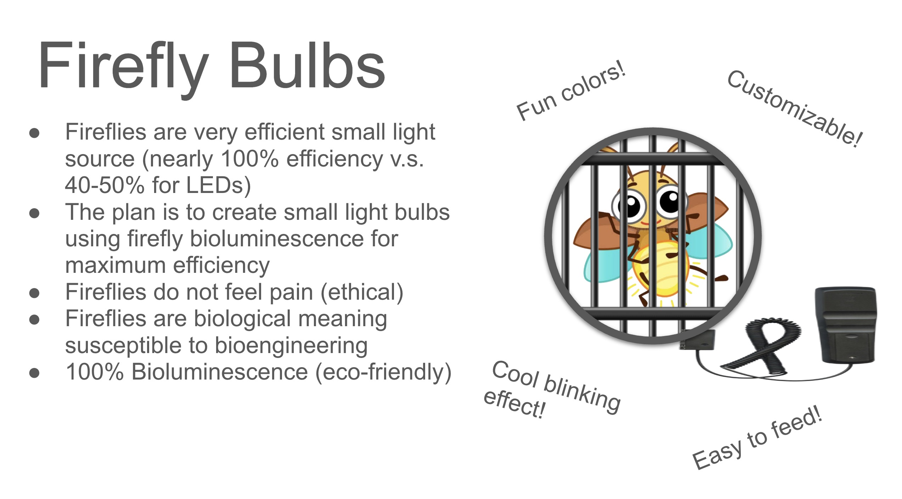

We were given a function and an adjective to design our thing, which we got "light" and "small." Inspired by modern fly technology, our group designed firefly bulbs which come in capsules and bioengineered fireflies for illumination. We added different features, such as engineering the fly's brain to allow for remote controlled on/off switches, and they can come in LED lights.